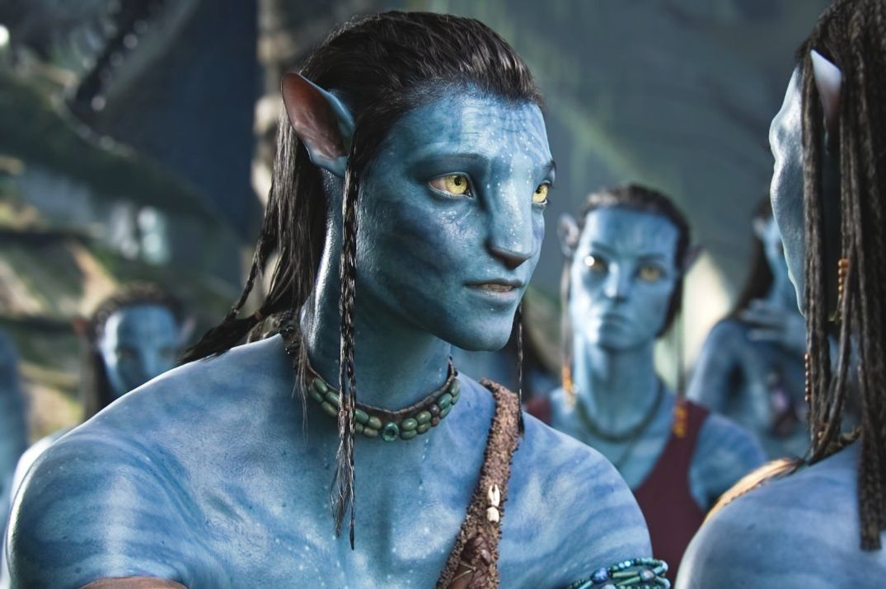

Stepping into Pandora — The World of Avatar, the sprawling, 12-acre land that just opened at Disney World’s Animal Kingdom — is, as the creators surely intended, like entering another planet. Strange plants sit next to ones that you sort of recognize. You can hear odd animals rustle in the underbrush. At night, a bioluminescent forest comes to life, bathing everything in an ethereal glow. Your footsteps light up as you walk. Everything, it seems, is alive.
And the attractions inside the land are just as immersive; the Na’vi River Journey lets you cruise through the planet’s wilderness and culminates in an animatronic Na’vi Shaman of Song. And on Flights of Passage, a 3-D ride that simulates riding one of the movie’s dragonlike banshees, you can actually feel the animal breathe beneath you.
There are a million questions that will race through your mind as you wander around Pandora, like how did they make the floating mountains actually float? Did you really hear different animals scuttling around and making different noises at different parts of the day? And if I’m on Pandora, an alien planet that symbolizes freedom from the ravages of capitalism, how am I still able to order a Coca-Cola?
But the biggest question you’ll probably ask yourself is why? Why did Disney, a company flush with recognizable brands like Star Wars and Marvel, spend more than a half-decade and hundreds of millions of dollars working with one of the most notoriously difficult filmmakers on the planet to create a land based on a movie that people rarely talk about and hardly remember?
The answer is a complicated one. But it has a lot to do with a certain boy wizard.
